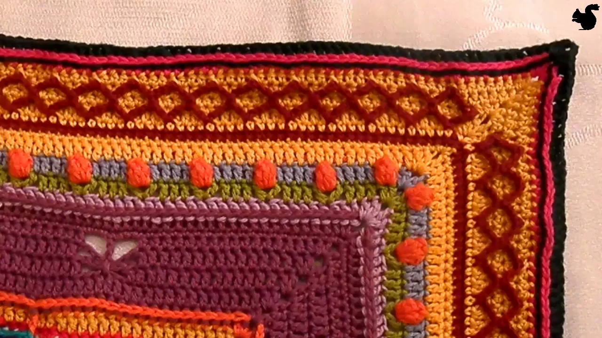
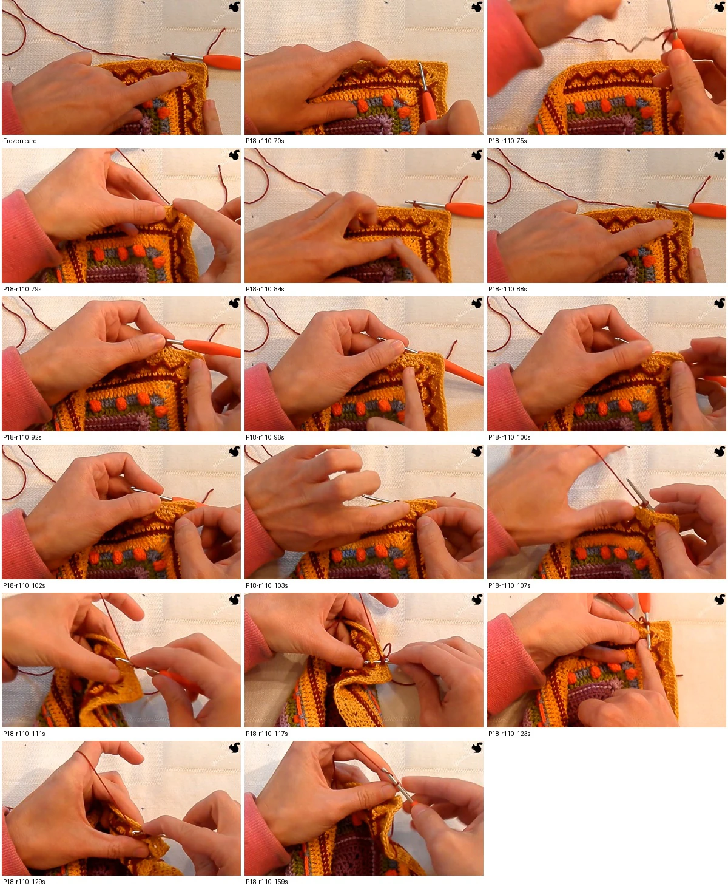
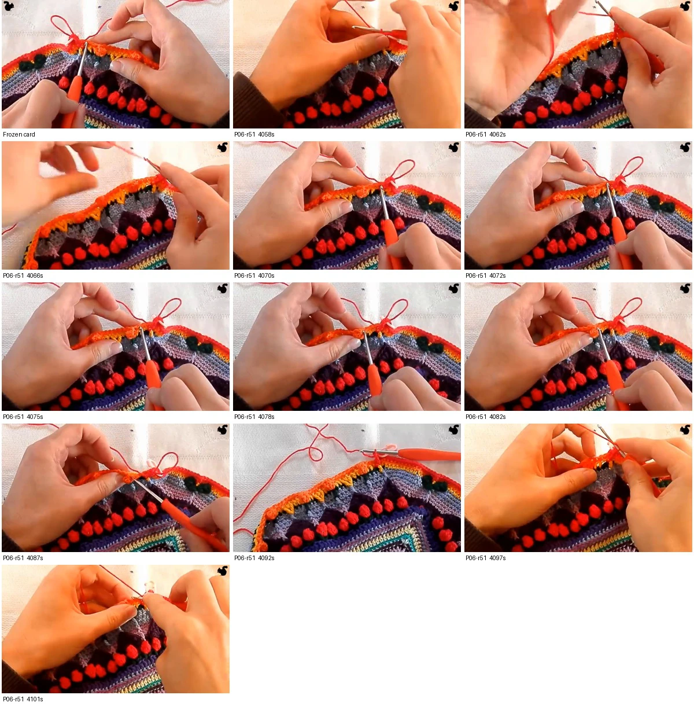

首轮
GPT-6 Luna
11 / 100
95 个圈次复用同一段收线模板，证据索引整体错后一页。
首轮报告 ↗D6 教育与学习 / 长视频手工评测
从空钩针到第 113 圈
把 18 集讲解视频变成一份可独立跟做的中文图文 PDF。读者要能从第一针起步，也要能看着四张局部照片找到下一针的落点。

任务与输入
从空钩针和线材出发，逐圈写清落针位置、重复单位、转角或换边、闭圈和收尾。第 25 圈是可选装饰。范围止于第 113 圈收尾。
均从同一套讲解视频截帧。点击可放大原图。
同题实测 · 2026 年 11 月 27 日
两次运行使用同一套冻结素材和评测协议。
两份文件均通过机械检查。专家实钩终评待定。
首轮
11 / 100
95 个圈次复用同一段收线模板，证据索引整体错后一页。
首轮报告 ↗复测
59 / 100
原始分 72。R110 菱形锚点错位触发 59 分封顶。
复测报告 ↗| 评分维度 | Luna | Sol | 满分 |
|---|---|---|---|
| 起针到结尾 | 0 | 22 | 36 |
| 八个跨圈或形态变化检查 | 1 | 23 | 32 |
| 四张续作卡 | 3 | 15 | 20 |
| 两项可逆恢复 | 5 | 8 | 8 |
| 可读、可追踪交付 | 2 | 4 | 4 |
| 原始分 | 11 | 72 | 100 |
0/2 R3–R5 未给所需重复单位，R6 提前引入四角，R8 写成普通边针/链空间而非后半针。对照作者 P01。 p.2
0/2 R10 已写成按长短边分配，R12 仍缺实际重复式，R15 误作爆米花层。对照作者 P02。 p.3
0/2 R18–24 被末段收尾模板覆盖。R25 省略符合规则。对照作者 P03。 p.4
0/2 R26–36 均使用同一末段收尾模板，缺少本集实际动作。对照作者 P04。 p.5
0/2 R37–45 均使用同一末段收尾模板，缺少本集实际动作。对照作者 P05。 p.6
0/2 R46–53 均使用同一末段收尾模板，缺少本集实际动作。对照作者 P06。 p.7
0/2 R54–61 均使用同一末段收尾模板，缺少本集实际动作。对照作者 P07。 p.8
0/2 R62–68 均使用同一末段收尾模板，缺少本集实际动作。对照作者 P08。 p.9
0/2 R69–74 均使用同一末段收尾模板，缺少本集实际动作。对照作者 P09。 p.10
0/2 R75–80 均使用同一末段收尾模板，缺少本集实际动作。对照作者 P10。 p.11
0/2 R81–84 均使用同一末段收尾模板，缺少本集实际动作。对照作者 P11。 p.12
1/2 R81–84 均有钩法和层次。R81 只写逐渐升降针高，R83 只写略过一段实顶且未给中段次数。新四角与扇背接入缺少可独立复现的计数和落点。 p.24
0/2 R85–88 均使用同一末段收尾模板，缺少本集实际动作。对照作者 P12。 p.13
0/2 R89–92 均使用同一末段收尾模板，缺少本集实际动作。对照作者 P13。 p.14
2/2 R89–92 各有实际步骤。沿第88圈后面的三枚旧顶交替绕短针、辨认第90圈扇背柱，并给出第92圈的163实针与角针。R91 后绕版是作者 P13 明示的选项。 p.26
0/2 R93–97 均使用同一末段收尾模板，缺少本集实际动作。对照作者 P14。 p.15
0/2 R98–101 均使用同一末段收尾模板，缺少本集实际动作。对照作者 P15。 p.16
1/2 R98–101 各有实际步骤。R100 只在角前加爆，缺角后额外的一枚。写120爆，作者 P15 为124爆。R98 后绕选项有作者依据。 p.28
0/2 R102–104 均使用同一末段收尾模板，缺少本集实际动作。对照作者 P16。 p.17
0/2 R105–109 均使用同一末段收尾模板，缺少本集实际动作。对照作者 P17。 p.18
1/5 正确判断紫色底边完成、新线未钩。图圈到的是近钩针的区域，正文把针顶当目标；原作者 P04 R26 与 94–115 秒明确从 R24 背绕。 p.20
5/5 紫边已形成而新线尚未成针，图上标出凸柱、向左推进、翻边后只背绕一根 R24 柱并继续9针。浅色抱线和补看动作与 P04 94–115 秒相符。 p.32
2/5 辨认橙边与放大的红色活动圈，并给出镜像下向右推进。图文均未正确落到 R49 前绕针柱，顶 V 短针及结果均偏离 P06 R51（4050–4110 秒）。 p.21
4/5 P06 4047–4069 秒完成新红色前绕，4072 秒已是数跳针的阶段。按这一时刻恢复活圈、跳二、钩四 H，并给出镜像向右和爆锁不计数的验收。B/C/D 标线不足以分别核对具体针顶，B 把数跳针时的钩尖当作第三针的证据不足。按旧卡文字逐字套用得2分。 p.33
原始交付
两份 PDF 按提交原件提供。
其中的落针错误见下方评审记录。
评审复核

C04 / R110
Sol 将第八顶的引拔接线写成立中长针，后续半格也回到了错误位置。作者第 18 章和实拍均指向承载 R107 短针的底针，错误会改变锚点与针高。

C02 / R50
题图取自 01:07:52，前绕针此时已完成。下一步是回到红色活圈、跳两针再做中长针。按实拍给 Sol 4/5，按冻结卡旧文字为 2/5。两种口径的原始分分别为 72 与 70，封顶后均为 59。
第 18–24 圈和第 26–113 圈重复使用收线文字。四张续作卡的实际位置为第 20–23 页，索引各写晚了一页。
查看 Luna 第 20 页 ↗第 113 圈直边的后绕长针写成了后绕中长针，且缺少最终 864 针的验收。
查看 Sol 第 38 页 ↗出处与口径
Dedri Uys 的原版逐圈图文是评审参考。Esther Dijkstra 的同章视频用于核对实际落点、动作顺序和针数。候选输入是视频、英文字幕或转写和四张续作卡。
两组结果各来自一次运行。四张卡与视频同源，第 11 集的英文转写质量偏低。